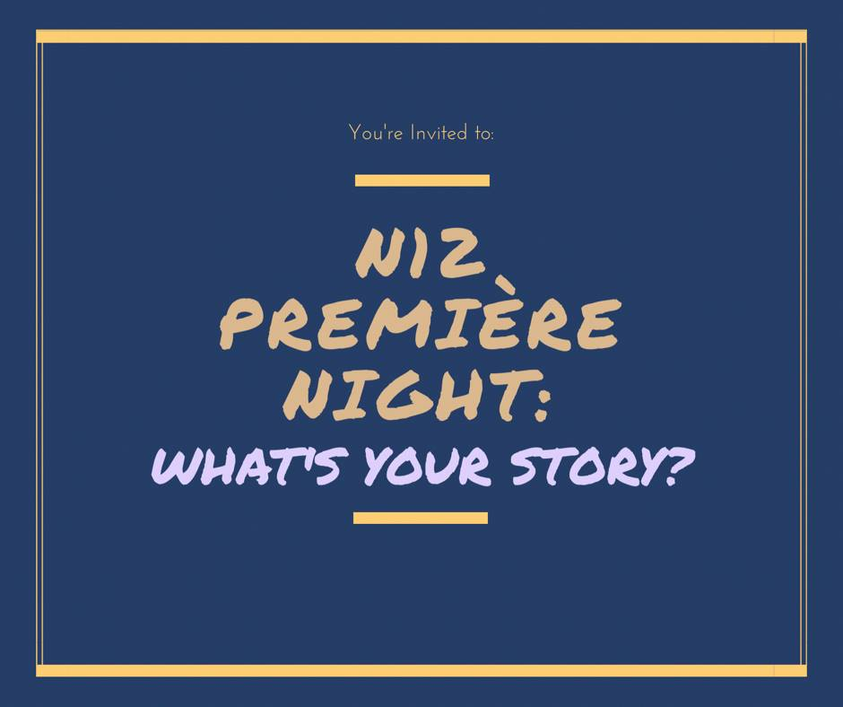

2017년 7월에 시작된 PROJECT NON SIBI는 무의미하게 변질되어 버린 청년들의 문화를 우리의 손으로 재창조하려는 한국 발(發)의 무브먼트 (Movement)입니다. 온라인 공간의 디지털 매체이며 오프라인 공간의 이야기공작소 (Storytelling Studio)로서, 화려하고 선정적인 헤드라인보다는 자신의 꿈과 철학을 품고 매일의 삶을 살아가는, 평범함 속에서 비범함을 추구하는 사람들의 가슴 뛰게 하는 이야기들을 사회에 알리고 있습니다. PROJECT NON SIBI는 방향성 없는 생활에서 벗어나 우리 세대만의 가치를 찾아가고 만들어 나가는 진정한 멋쟁이들의 모임, 즉 우리 세대 가치의 나침반 (compass of values)이 되고자 합니다.
‘NON SIBI’는 ‘NOT FOR ONESELF’, 즉 ‘자신만을 위하지 않는’ 이라는 뜻의 라틴어로서, 개인주의와 극단주의가 만연하는 오늘날, 다시 한 번 이타주의적 정신을 살리고, 사람에 대한 진정한 이해는 타인의 진솔한 이야기에 귀 기울이는 것에서부터 시작한다는 저희의 신념을 상징합니다.
PROJECT NON SIBI는 모든 스토리텔러 (Storyteller)의 이야기들이 소중한 가치가 있다고 믿으며, 이러한 진심들이 전해질 수 있도록 시간과 공간을 제공함으로써 우리 사회가 진정으로 필요로 하는 메시지와 컨텐츠를 널리 알리려고 합니다. 그리고 한 발 더 나아가, 그저 의미 있는 컨텐츠의 단순 배포를 넘어서, 말하는 이와 듣는 이가 얼굴을 맞대고 이야기를 공유함으로써 몰랐던 자신을 찾아가는 능동적인 배움의 장이 되고자 합니다.
N12 에서는 주기적으로 저희의 스토리텔링 스튜디오에서 자신만의 이야기를 모두와 공유하는 공감의 장을 엽니다. 스토리텔러들은 N12 에 다양한 열정과 이야기들을 품고 찾아옵니다. 화려하지는 않아도 지극히 인간적인, 어쩌면 일상적인 이야기들을 나누며 그에 내포된 의미와 진심을 영상, 장편 및 단편 기사, 포토 에세이, 음악, 다큐멘터리 등 가장 적합한 매체로 옮기는 과정 또한 도와드리고 있습니다. 나만의 이야기로 소중한 가치를 전달하고자 하시는 분, 나의 또 다른 자신을 N12를 통해 찾아가기를 원하시는 여러분 모두를 초대합니다.